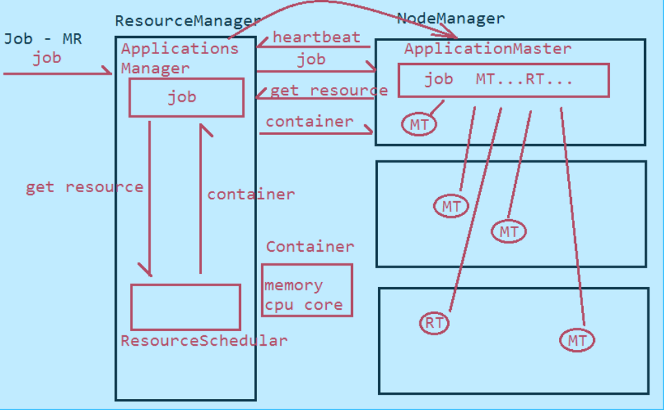

kafka概念以及如何保证kafka消息不丢
Kafka是分布式发布-订阅消息系统，它最初是由LinkedIn公司开发的，之后成为Apache项目的一部分，Kafka是一个分布式，可划分的，冗余备份的持久性的日志服务，它主要用于处理流式数据。
生产者可靠性：
- 通过配置参数 request.required.acks=-1，所有ISR列表中的所有副本同步数据完成后才leader向生产者发送成功消息；
- 开启副本数 min.insync.replicas>=2
- 开启幂等性 enable.idempotence=true
- 开启不允许非isr副本选举为 leader,unclean.leader.election.enable=false
消费者可靠性：
- enable.auto.commit=false 关闭自动提交offset
HDFS读写流程
HDFS 读取过程：
- 客户端调用FileSystem实例的open方法，获取这个文件对应的输入流InputStream
- 通过RPC远程调用NameNode，获得NameNode中此文件第一块数据的位置
- 从最近的DataNode中读取一块数据，再去获取第二块数据位置读取，直至整个文件读取完毕
- 客户端调用close方法，关闭输入流
HDFS 写过程：
- 客户端向NameNode发起写数据请求
- NameNode会检查文件是否存在，是否具有权限，成功创建一个记录
- 客户端将文件进行切片，然后上传数据块，按照一个一个的形式发送，每个数据块都要写到三个DataNode上
- 成功后返回ack给客户端，继续上传下一个数据块，直至所有的数据块写入成功
- 写入完成以后，客户端向NameNode发送一个反馈消息，关闭数据流
impala和flume里面的一些组件和流程，如何去操作执行
对Yarn的了解
资源管理，任务调度框架；
ResourceManager NodeManager ApplicationMaster(每一个应用都会在NodeManager上启动一个)
- RM： 负责资源的监控、分配和管理
- AM： 负责每一个具体应用程序的调度和协调
- NM： 负责每一个节点的维护
调度器
- FIFO(队列)调度：把应用按提交的顺序拍成一个队列，按照先进先出进行资源分配
- 容量调度： 允许多个组织共享整个集群，再为每个组织分配专门的队列，在位每个组织分配相应得计算资源
- 公平调度：在公平调度中，我们不需要提前占用集群得资源，fair调度器会在运行过程中根据job执行动态的调整系统资源分配
yarn执行流程
- NodeManager 向ResourceManager的ApplicationManager注册资源
- 客户端提交job到ResourceManager节点上的ApplicationManager
- 当NodeManager心跳来到ResourceManager的时候，ApplicationsManager将job交给NodeManager的ApplicationMaster,ApplicationMaster将Job进行划分为Map,Reduce
- ApplicationsMaster会向ResourceScheduler申请资源，拿到资源后ApplicationMaster会对资源再划分为Map 和 Reducer的，然后将任务分配到不同的NodeManger节点上执行，监控job的执行情况
- ApplicationsManager进程监视每个ApplicationMaster